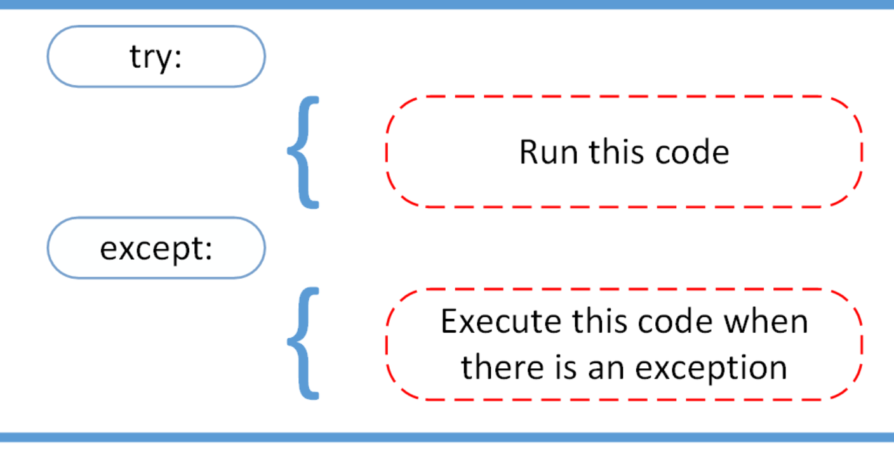
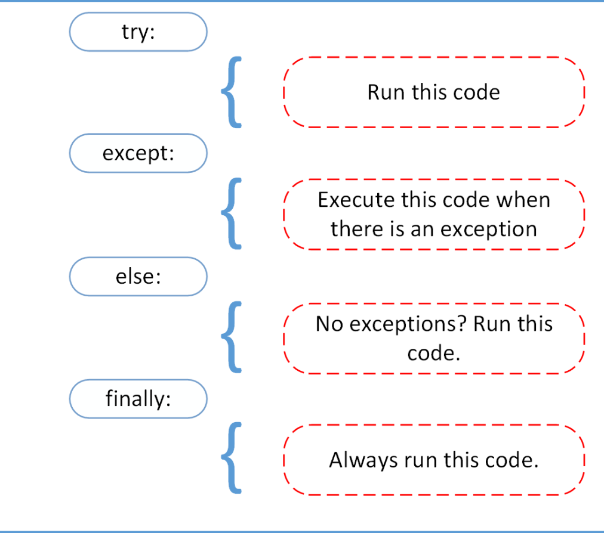

Handling Exceptions
Exceptions happen when an error occurs when running Python code.
If an exception occurs it will cause the program to crash/exit straight away and leave us a traceback explaining what occurred and where:
For example, if we were to run the following code:
We would see this:
$ python example.py
Traceback (most recent call last):
File "/path/to/example.py", line 4, in <module>
greet('Chad')
File "/path/to/example.py", line 2, in greet
print('Hello, ' + someon)
NameError: name 'someon' is not defined
Sometimes an error is not so serious that we want to stop our program completely. Sometimes an error is completely expected and instead we want to handle the error without crashing our program altogether. To do this we need to "catch" the exception using a try except block.
Catching Exceptions with Try Except
The image below shows a simple example of the layout of a try except block.
 Image taken from RealPython: https://realpython.com/python-exceptions/
This works out effectively as:
try:
[trying to do something that may given an error]
except [a specific error]:
[if the error occurred, I can handle it here before continuing]
Here is a simple example try except block:
try:
with open('file.log') as file:
read_data = file.read()
except FileNotFoundError as fnf_error:
print(fnf_error)
Here the program that contains this code will not crash if the file file.log is not found. Instead the FileNotFoundError will be raised and caught and then printed to the screen, but the program will continue running.
The tempting and classic mistake, a blank except
This should be avoided:
try:
[code where we try to do something]
except:
pass # ignores the exception and does nothing about it.
The problem here is not writing pass (as in some cases, just carrying on is what you want to do). The problem here is writing a blank except line.
This code will catch all exceptions, including things you might not think are exceptions such as: SystemExit, KeyboardInterrupt (typing ctrl-c on your keyboard to crash the program), and MemoryError.
Whilst not as bad, this should also be avoided:
This is better as now things like SystemExit, KeyboardInterrupt and MemoryError will cause the program to crash (which we would want) but we still run the risk that we catch the wrong exception. This could lead to our program behaving unexpectedly. It's therefore better to be specific with your exceptions.
If there are multiple exceptions possible in you code, you can do something like the following instead:
try:
# Some code that may raise an exception
except FileNotFoundError:
print("File not found.")
except ValueError:
print("Invalid value.")
except Exception as e:
print(f"An unexpected error occurred: {e}")
So handle each exceptions as they need to be handled.
Another classic mistake, too long try except blocks
A good rule is that the try except block should be as small as possible. This will help make your code easier to read.
Take the code below as an example:
file_path = 'example.txt'
try:
with open(file_path, 'r') as file:
content = file.read()
if content != None:
numb_lines = determine_numb_lines(content)
print(f"The number of lines in the file is {numb_lines}")
except FileNotFoundError:
print(f"File not found: {file_path}")
content = None
The problem here is that the try block is to large. It contains lines of code that have nothing to do with the FileNotFoundError.
We should instead write:
file_path = 'example.txt'
try:
with open(file_path, 'r') as file:
content = file.read()
except FileNotFoundError:
print(f"File not found: {file_path}")
content = None
if content != None:
numb_lines = determine_numb_lines(content)
print(f"The number of lines in the file is {numb_lines}")
Exercise:
See if you can find some common use cases for try-excepts in Python. We've already seen handling file operations (e.g. FileNotFoundError).
More try except settings:
 Image taken from RealPython: https://realpython.com/python-exceptions/
As the image shows, there are two additional parts to a try-except block in Python, else and finally. I don't find I often use them but they are good to be aware of.
Warning vs Errors
On the topic of errors and exceptions it is worth discussing warnings.
As explained on geeksforgeeks.org:
Warnings are provided to warn the developer of situations that aren’t necessarily exceptions. Usually, a warning occurs when there is some obsolete of certain programming elements, such as keyword, function or class, etc. A warning in a program is distinct from an error. Python program terminates immediately if an error occurs. Conversely, a warning is not critical. It shows some message, but the program runs. The warn() function defined in the ‘warning‘ module is used to show warning messages. The warning module is actually a subclass of Exception which is a built-in class in Python.
The point to consider here is that when we get a warning, what we are doing may or may not be wrong/dangerous. It's up to us as the programmer to figure that out.